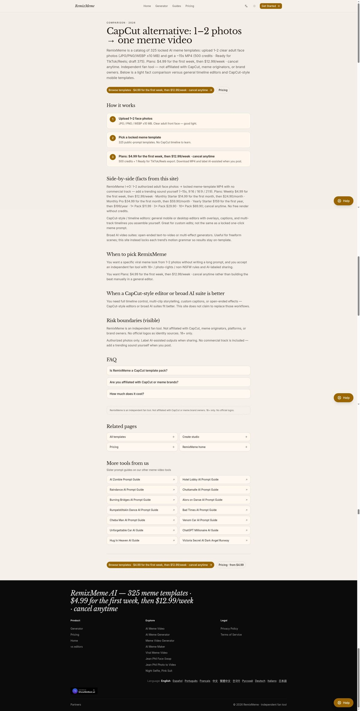
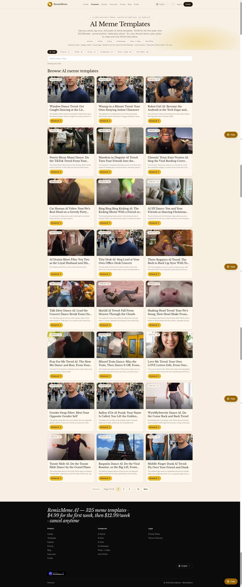

做 TikTok / Reels 热梗视频时，很多人会先打开 CapCut（剪映国际版）找模板，再自己塞素材。另一条路是：把 1～2 张成人脸部照片丢进锁定的梗模板，几分钟出一条约 15 秒的竖屏 MP4。后者正是 RemixMeme（https://remixmeme.com）这类「一键梗视频」工具的定位。
这篇文章不站队「谁更强」，只讲清两类工具差在哪、什么场景选谁，方便你按目标选型。

一句话对比
| 维度 | CapCut 类时间线剪辑 | RemixMeme（锁定梗模板） |
|---|---|---|
| 核心能力 | 时间线、字幕、转场、音效、多轨精细剪辑 | 约 325 个公开提示的锁定梗模板，照片 → 成片 |
| 输入 | 多段素材、自己拍/找的片段 | 1～2 张成人脸部照片 |
| 输出 | 完全自定义时长与构图 | 默认约 15 秒、9:16，适合 TikTok/Reels |
| 学习成本 | 中～高（剪辑思路） | 低（选模板 + 上传照片） |
| 水印 | 视导出档位/账号而定 | 导出无水印 |
| 使用方式 | App / 桌面端为主 | 纯浏览器，无需装 App |
| 适合谁 | 要自己写字幕、卡点、改节奏的人 | 想快速复制「热梗画面语法」的人 |

CapCut 模板 vs RemixMeme「锁定模板」：差在「自由度」
CapCut：模板只是起点
CapCut 的模板很强：社区量大、节奏感好、字幕样式丰富。但模板打开后，你通常还要：
- 替换多段素材，对齐时间线；
- 自己调字幕、卡点、转场；
- 决定要不要加 trending 音轨（版权与平台推荐另说）。
一句话：CapCut 是「剪辑器 + 模板库」，最终成片质量高度依赖你的剪辑时间。
RemixMeme：模板是「成品语法」
RemixMeme 走的是另一条路：约 325 个锁定梗模板（公开提示词），把「热梗怎么拍、怎么切、怎么摆脸」固定成可复用的生成流程。你上传 1～2 张成人脸照片，工具按模板生成约 15 秒竖屏 MP4。
特点可以概括为：
- 浏览器即可用，不用装 App；
- 导出无水印；
- 自带 AI ambient / 原创氛围音；热门原曲需要你自己到平台加（站点不提供商用曲库授权）；
- 独立粉丝向工具，与 CapCut / ByteDance / 各梗品牌无关。
官网对比页可直接看：https://remixmeme.com/vs-capcut
什么时候选 CapCut？
诚实讲，这些场景 CapCut 更合适：
- 要完整时间线控制：多镜头、旁白、精细字幕、复杂转场。
- 成片结构不固定：不是「某一类热梗脸部玩法」，而是品牌片、教程、Vlog。
- 字幕与文案是核心卖点：你要一句句写 Hook、改字体、对口型。
- 已有大量自有素材：只是缺包装，而不是缺「把脸塞进梗」的能力。
如果你每天都在剪、愿意花时间打磨，CapCut 类工具仍然是主力。
什么时候选 RemixMeme？
更适合 RemixMeme 的情况：
- 目标就是「热梗脸」短视频：1～2 张照片快速出片，默认 9:16。
- 不想学剪辑：不想碰时间线，只想选模板 → 出片。
- 需要无水印导出、网页即用：设备上不想再装一个剪辑 App。
- 批量试风格：在锁定模板池里换不同梗语法，看哪条更吃推荐。
模板浏览页示意：

入口：https://remixmeme.com
定价怎么理解（避免和「免费剪辑」比错）
CapCut 很多基础剪辑可免费用；RemixMeme 的视频生成按 计划 / 积分包 计费（浏览模板免费）。官方口径大致是：
- 新账号约 20 欢迎积分 ≈ 2 张图；出视频需要订阅或积分包；
- 首周 $4.99，之后 $12.99/周；
- Monthly Starter：首月 $14.99，之后 $24.90/月（约 3 条视频量级）；
- Monthly Pro：首月 $34.99，之后 $59.90/月（约 10 条）；
- Yearly Starter：首年 $159，之后 $199/年（约 36 条）；
- 一次性积分包：$11.99 / $29.90 / $69.90；
- 720p Ready 导出 = 500 积分；草稿约 375；失败任务退积分；可随时取消。
更细的价目以官网为准：https://remixmeme.com/pricing
选型建议：别把「免费剪辑器」和「按次生成的 AI 梗视频」放在同一价格尺子上比——一个卖的是剪辑能力，一个卖的是锁定模板生成。
合规与使用注意（必读）
- 独立粉丝向工具，不隶属 CapCut / 字节跳动或任何梗版权方；
- 仅限 18+；上传照片须有本人授权与同意；
- 发布到社交平台时，请按平台规则 标注 AI 生成；
- 热门商用音轨请自行在 TikTok/Reels 侧添加，勿默认站点已授权。
FAQ
Q1：RemixMeme 能完全替代 CapCut 吗？
不能。要精细字幕、多轨、长片结构，仍选 CapCut；要「照片进锁定热梗模板」，RemixMeme 更省事。
Q2：没有 App 能用吗？
可以。RemixMeme 是浏览器工具，不用安装。
Q3：导出会有水印吗？
按产品说明，导出无水印。
Q4：音频怎么办？
站内提供 AI ambient / 原创氛围音；若要平台上的 trending 原曲，需自己在发布端添加。
Q5：和 CapCut 官方有关系吗？
没有。RemixMeme 是独立粉丝向工具，详见 https://remixmeme.com/vs-capcut 与免责说明。
小结：CapCut 赢在「全能剪辑」；RemixMeme 赢在「锁定热梗语法 + 照片一键成片」。按目标选工具，比纠结「谁更好」更有用。试用入口见官网即可：https://remixmeme.com